Vue第一天
今日内容介绍
- Vue介绍
- MVVM模式介绍
- Vue开发流程
- Vue常用系统指令
- 实现品牌管理案例
- Vue调试工具
##今日内容学习目标
- 了解Vue的版本和常用学习资源
- 理解MVVM模式要解决的问题
- 能够分清楚MMVM中的M，V，VM在Vue的编码结构中是对应哪些代码块的
- 能够记住Vue的3个编码步骤
- 知道使用v-的相关的指令，例如v-text,v-html,v-model,v-for,v-on等
- 理解并记住Vue对象中的 el,data,methods三个属性的作用
- 能够利用vue的知识实现品牌管理的增，删除，列表展示
- 能够利用filterBy过滤器实现数据过滤
- 知道利用Vue-DevTools调试工具监控Vue运行时数据
###1.1.2 课程的特点和目的
在公司的项目开发中常常为了开发效率和可扩展性考虑，为了方便在后期维护软件，降低维护成本，公司常常会选择业内已经成熟的框架来架构自己的产品，其中Vue作为一个国产的前端开发框架，拥有完整的中文文档和学习门槛低而被越来越多的公司清奈，因此作为前端开发人员要想能够更快的看懂公司框架更好的融入到公司业务中，也必须学习Vue。
这套Vue项目课程从设计上是以常见开发需求作为依托，学习完毕以后，使同学们能够感受到公司通常开发的功能是什么样的，该如何去和后台配合。整个课程在教学中是由浅入深，从0到1带领学生一步步的将项目功能做出来，主要特点有：
- 首先会带领同学们学习Vue的基础知识
- 其次带领大家从0到1搭建一个项目框架，使学生拥有项目的架构能力
- 最后带领大家在自己搭建好的项目框架上实现一个个项目功能，对前面知识的一个综合运用，整个过程中让同学们感受一个完整的项目是如何产生的
1.2 项目截图
- 首页

新闻资讯
图片分享
商品购买
购物车
1.3 Vue前置知识
1.3.1 Vue学习资源
- Vue官网： https://cn.vuejs.org/
- Vue GitHub：https://github.com/vuejs/vue
- Vue1.0 在线文档：http://v1-cn.vuejs.org/guide/
- Vue2.0 在线文档：https://cn.vuejs.org/v2/guide/
- Vue1下载地址：http://v1-cn.vuejs.org/js/vue.js
- Vue2下载地址：https://unpkg.com/vue@2.2.1/dist/vue.js
1.3.2 Vue使用现状
- Vue项目：饿了么招聘：https://jobs-mobile.ele.me/#!/
- Vue 1.0.26开发的移动版项目：https://www.uhouzz.com/
- Vue.js v1.0.28开发的移动版项目： http://m.jianguanoa.com/#!/index （开启chrome调试工具中的移动版浏览）
- Vue.js v1.0.28开发的移动版项目： http://www.fangdd.com/group/shanghai?zhihu
- Vue开发的PC版本项目：http://lushi.zhujunwu.cn/#!/builds
- 知乎上的一个专帖:国内有哪些公司在用Vue.js，有什么心得
1.4 开始课程
1.4.1 MVVM模式
MVVM拆分解释为：
- Model:负责数据存储
- View:负责页面展示
- View Model:负责业务逻辑处理（比如Ajax请求等），对数据进行加工后交给视图展示
MVVM要解决的问题是将业务逻辑代码与视图代码进行完全分离，使各自的职责更加清晰，后期代码维护更加简单
用图解的形式分析Ajax请求回来数据后直接操作Dom来达到视图的更新的缺点，以及使用MVVM模式是如何来解决这个缺点的
- Vue中的 MVVM 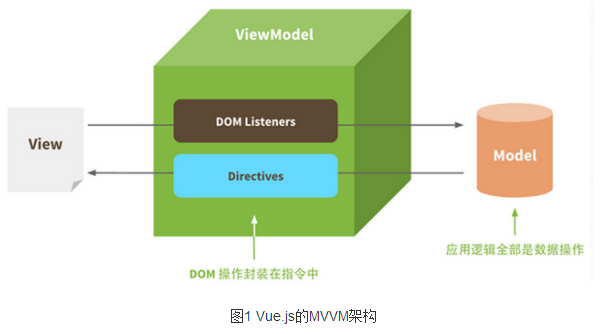
1.4.2 Vue初体验（记住Vue的编写步骤）
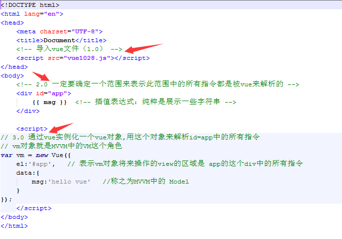
1.4.3 Vue常用系统指令
- 插值表达式{{}}：
数据绑定最常见的形式就是使用 “Mustache” 语法（双大括号）的文本插值 例如：<span>Message: {{ msg }}</span> Mustache 标签将会被替代为对应数据对象上 msg 属性（msg定义在data对象中）的值。 无论何时，绑定的数据对象上 msg 属性发生了改变，插值处的内容都会更新。 {{}}对JavaScript 表达式支持，例如： {{ number + 1 }} {{ ok ? 'YES' : 'NO' }} {{ message.split('').reverse().join('') }} 但是有个限制就是，每个绑定都只能包含单个表达式，如下表达式无效： <!-- 这是语句，不是表达式 --> {{ var a = 1 }} <!-- 流控制也不会生效，请使用三元表达式 --> {{ if (ok) { return message } }}v-text
v-text可以将一个变量的值渲染到指定的元素中,例如： <div v-text="msg"></div> new Vue({ data:{ msg:'hello ivan' } }); 输出结果： <div>hello ivan</div>- v-html
双大括号和v-text会将数据解释为纯文本，而非 HTML 。 为了输出真正的 HTML ，你需要使用 v-html 指令： 例如：<div v-html="rawHtml"></div> new Vue({ data:{ rawHtml:'<h1>hello ivan</h1>' } }) 被插入的内容都会被当做 HTML,但是对于没有HTML标签的数据绑定时作用同v-text和{{}} 注意：使用v-html渲染数据可能会非常危险，因为它很容易导致 XSS（跨站脚本） 攻击，使用的时候请谨慎，能够使用{{}}或者v-text实现的不要使用v-html- v-cloak
v-cloak指令保持在元素上直到关联实例结束编译后自动移除，v-cloak和 CSS 规则如 [v-cloak] { display: none } 一起用时，这个指令可以隐藏未编译的 Mustache 标签直到实例准备完毕。 通常用来防止{{}}表达式闪烁问题 例如： <style> [v-cloak] { display: none } </style> <!-- 在span上加上 v-cloak和css样式控制以后，浏览器在加载的时候会先把span隐藏起来，知道 Vue实例化完毕以后，才会将v-cloak从span上移除，那么css就会失去作用而将span中的内容呈现给用户 --> <span v-cloak>{{msg}}</span> new Vue({ data:{ msg:'hello ivan' } })v-model以及双向数据绑定
1、在表单控件或者组件上创建双向绑定 2、v-model仅能在如下元素中使用： input select textarea components（Vue中的组件） 3、举例： <input type="text" v-model="uname" /> new Vue({ data:{ uname:'' //这个属性值和input元素的值相互一一对应，二者任何一个的改变都会联动的改变对方 } }) 4、修饰符（了解）： .lazy - 取代 input 监听 change 事件 .number - 自动将输入的字符串转为数字 .trim - 自动将输入的内容首尾空格去掉v-bind
1、作用：可以给html元素或者组件动态地绑定一个或多个特性，例如动态绑定style和class 2、举例： <img v-bind:src="imageSrc"> <div v-bind:class="{ red: isRed }"></div> <div v-bind:class="[classA, classB]"></div> <div v-bind:class="[classA, { classB: isB, classC: isC }]"> <div v-bind:style="{ fontSize: size + 'px' }"></div> <div v-bind:style="[styleObjectA, styleObjectB]"></div> 3、缩写形式 <img :src="imageSrc"> <div :class="{ red: isRed }"></div> <div :class="[classA, classB]"></div> <div :class="[classA, { classB: isB, classC: isC }]"> <div :style="{ fontSize: size + 'px' }"></div> <div :style="[styleObjectA, styleObjectB]"></div>v-for
```
1、作用：通常是根据数组中的元素遍历指定模板内容生成内容 2、用法举例：
<div v-for="item in items"> {{ item.text }} </div> new Vuew({ data:{ items:[{text:'1'},{text:'2'}] } });3、可以为数组索引指定别名（或者用于对象的键）：
Vue1.0写法: <div v-for="(index,item) in items"></div> <div v-for="(key,val) in user"></div> new Vue({ data:{ items:[{text:'1'},{text:'2'}], user:{uname:'ivan',age:32} } }); Vue2.0写法: <div v-for="(item, index) in items"></div> <div v-for="(val, key) in user"></div> <div v-for="(val, key, index) in user"></div> new Vue({ data:{ items:[{text:'1'},{text:'2'}], user:{uname:'ivan',age:32} } }); 4、v-for 默认行为试着不改变整体(为了性能考虑的设计)，而是替换元素。迫使其重新排序的元素,在Vue2.0版本中需要提供一个 key 的特殊属性，在Vue1.0版本中需要提供一个 track-by="$index": Vue2.0写法： <div v-for="item in items" :key="item.id"> {{ item.text }} </div> Vue1.0写法： <div v-for="item in items" track-by="$index"> {{ item.text }} </div>5、vue1.0与vue2.0对于v-for使用区别总结：
1、vue1.0中有$index ，而vue2.0中将$index移除 2、vue1.0中 (index,item) in list 而 vue2.0 变成了 (item,index) in list的写法 3、vue1.0中使用 track-by来标记dom对象的唯一性，vue2.0中改成了 :key
- v-if
-
1、作用：根据表达式的值的真假条件来决定是否渲染元素，如果条件为false不渲染（达到隐藏元素的目的），为true则渲染。在切换时元素及它的数据绑定被销毁并重建
2、示例：
<!-- Handlebars 模板 -->
{{#if isShow}}
<h1>Yes</h1>
{{/if}}
通常我们使用写法居多：
<h1 v-if="isShow">Yes</h1>
也可以用 v-else 添加一个 “else” 块：
<h1 v-if="isShow">Yes</h1>
<h1 v-else>No</h1>
注意：v-else 元素必须紧跟在 v-if 元素否则它不能被识别。
new Vue({
data:{
isShow:true
}
});
- v-show
-
1、根据表达式的真假值，切换元素的 display CSS 属性，如果为false，则在元素上添加 display:none来隐藏元素，否则移除display:none实现显示元素
2、示例：
<h1 v-show="isShow">Yes</h1>
new Vue({
data:{
isShow:true
}
});
3、v-if和v-show的总结：
v-if和v-show 都能够实现对一个元素的隐藏和显示操作,但是v-if是将这个元素添加或者移除到dom中，而v-show
是在这个元素上添加 style="display:none"和移除它来控制元素的显示和隐藏的
- v-on
-
1、作用：绑定事件监听，表达式可以是一个方法的名字或一个内联语句，如果没有修饰符也可以省略，用在普通的html元素上时，只能监听 原生 DOM 事件。用在自定义元素组件上时，也可以监听子组件触发的自定义事件。
2、常用事件：
v-on:click
v-on:keydown
v-on:keyup
v-on:mousedown
v-on:mouseover
v-on:submit
....
3、v-on提供了很多事件修饰符来辅助实现一些功能，例如阻止冒泡等
事件修饰符有如下：
.stop - 调用 event.stopPropagation()。
.prevent - 调用 event.preventDefault()。
.capture - 添加事件侦听器时使用 capture 模式。
.self - 只当事件是从侦听器绑定的元素本身触发时才触发回调。
.{keyCode | keyAlias} - 只当事件是从侦听器绑定的元素本身触发时才触发回调。
.native - 监听组件根元素的原生事件。
4、示例：
<!-- 方法处理器 -->
<button v-on:click="doThis"></button>
<!-- 内联语句 -->
<button v-on:click="doThat('hello', $event)"></button>
<!-- 缩写 -->
<button @click="doThis"></button>
<!-- 停止冒泡 -->
<button @click.stop="doThis"></button>
<!-- 阻止默认行为 -->
<button @click.prevent="doThis"></button>
<!-- 阻止默认行为，没有表达式 -->
<form @submit.prevent></form>
<!-- 串联修饰符 -->
<button @click.stop.prevent="doThis"></button>
5、v-on的缩写形式：可以使用@替代 v-on:
<button @click="doThis"></button>
### 1.4.4 利用系统指令实现品牌管理案例
- 目的
通过案例熟悉Vue系统指令的用法和结构的写法练习，做到知识点的巩固和学会应用，并且在案例的扩展需求中，学习Vue新知识点，做到先有需求，再有知识点学习，最后到知识点的应用，让学员学习知识点的同时学会知识点的应用
- 实现品牌列表数据展示
-
+ 效果

+ 代码

- 实现品牌数据添加
-
+ 效果

+ 代码


- 实现品牌数据删除
+ 效果

+ 代码


- 实现根据品牌名称过滤符合条件的数据
+ 效果

+ 代码

### 1.4.5 Vue在Chrome浏览器的调试工具Vue-Devtools
- 作用
```html
Vue-Devtools是Chrome浏览器的一个扩展，通过Vue-Devtools可以实现在Chrome浏览器的调试工具栏中查看到Vue开发页面的相关数据对象，方法，事件，状态信息，方便程序员监控和调试解决问题
地址
GitHub地址：https://github.com/vuejs/vue-devtools Chrome插件地址：https://chrome.google.com/webstore/detail/vuejs-devtools/nhdogjmejiglipccpnnnanhbledajbpd?hl=zh-CN通过Chrome插件地址安装插件(注意：这种方式需要翻墙)
1、在Chrome浏览器中打开地址：https://chrome.google.com/webstore/detail/vuejs-devtools/nhdogjmejiglipccpnnnanhbledajbpd?hl=zh-CN
2、点击里面的“+ 添加至CHROME” 按钮即可安装插件

3、安装以后，在Chome浏览器中打开使用Vue开发的站点后按F12打开调试工具即可看到Vue调试工具
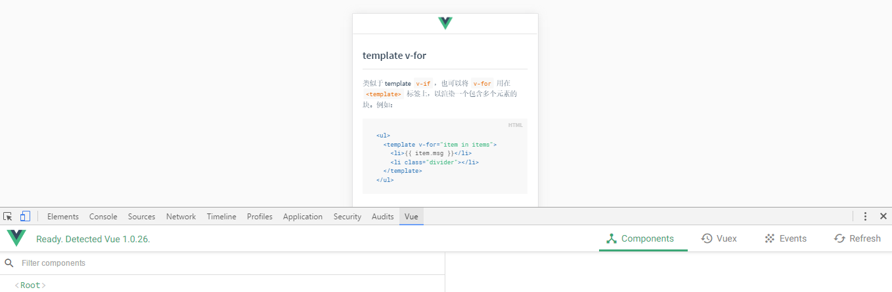
- 通过Vue-DevTools源码安装（需要先安装node.exe）
- 1、https://nodejs.org/en/ 下载node.exe安装
- 2、去https://github.com/vuejs/vue-devtools 下载到文件
- 3、进入vue-devtools-master工程 先执行npm install再执行npm run build
- 4、进入vue-devtools-master\shells\chrome文件夹中修改mainifest.json 中的persistant为true
- 5、打开谷歌浏览器设置--->扩展程序-->勾选开发者模式--->加载已解压的扩展程序--->选择“vue-devtools-master\shells下的chrome”文件夹，至此恭喜已经安装成功！
Vue第二天
今日内容介绍
- v-on按键修饰符
- 扩展品牌管理需求来学习新知识点
- Vue中的AJAX请求
- 跨域复习和JSONP
- Vue的生命周期方法
- 实现品牌管理案例的AJAX版
##今日内容学习目标
- 掌握v-on事件按键修饰符的作用
- 记住自定义属性指令和元素指令的写法
- 记住自定义过滤器的写法以及管道符|的使用
- 能够分清楚私有过滤器和全局过滤器的应用场景
- 掌握vue-resource中get方法的使用
- 掌握vue-resource中jsonp方法的使用
- 掌握vue-resource中post方法的使用
详细内容
1 v-on按键修饰符
1.1 作用说明
文档地址：http://cn.vuejs.org/v2/guide/events.html#按键修饰符
在监听键盘事件时，我们经常需要监测常见的键值。 Vue 允许为 v-on 在监听键盘事件时添加按键修饰符：
.enter
.tab
.delete (捕获 “删除” 和 “退格” 键)
.esc
.space
.up
.down
.left
.right
1.0.8+ 支持单字母按键别名。
###1.2 可以自定义按键别名
在Vue2.0 中默认的按键修饰符是存储在 Vue.config.keyCodes中
// 例如在Vue2.0版本中扩展一个f1的按键修饰符写法：
Vue.config.keyCodes.f1 = 112
在1.0.17+ 中默认的按键修饰符是存储在Vue.directive('on').keyCodes中
// 例如在Vue1.0中扩展一个f1的按键修饰符写法：
Vue.directive('on').keyCodes.f1 = 112
1.3 利用v-on的.enter按键修饰符实现品牌管理的新增按钮功能
效果图
实现代码
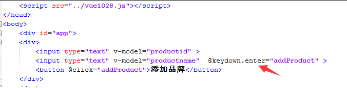

2 自定义指令
当Vue提供的系统指令不能满足需求时，就需要自己定义指令来进行扩展，例如，定义一个v-focus指令来实现文本框的自动获取焦点功能
2.1 自定义属性指令
- 写法格式
定义指令：
Vue.directive('指令ID，不需要增加v-前缀',function(){
//实现指令的业务
this.el //代表使用这个指令的元素对象
});
使用指令(当做一个元素的属性使用)：
<input type="text" v-指令ID />
- （属性指令应用举例）利用自定义属性指令实现自动获取焦点功能
定义指令：
//定义一个 v-focus的属性自定义指令
Vue.directive('focus',function(){
this.el.focus(); //实现文本框的自动获取焦点
});
使用指令：
<input type="text" v-focus />
2.2 自定义元素指令
- 写法格式
定义指令：
Vue.elementDirective('指令id',{
bind:function(){
//实现指令的业务
this.el //代表使用这个指令的元素对象
}
});
使用指令：
<指令id></指令id>
- （元素指令应用举例）利用自定义属性指令实现日期格式化
定义指令：
Vue.elementDirective('datefmt',{
bind:function(){
var v=this.el.attributes[0].value;
var date = new Date(this.vm[v]);
var year = date.getFullYear();
var m = date.getMonth() + 1;
var d = date.getDate();
//输出： yyyy-mm-dd
var fmtStr = year+'-'+m +'-'+d;
this.el.innerText = fmtStr;
}
});
new Vue({
el:'#app',
data:{
time:new Date()
}
});
使用指令：
<div id="app">
<datefmt :dt="time"></datefmt>
</div>
3 过滤器
Vue提供了一系列的固定逻辑来使程序员更加容易的实现这些功能，这些过滤器称之为系统过滤器，Vue也提供了一个接口用来供程序员定义属于自己的特殊逻辑，Vue称之为自定义过滤器
3.1 系统过滤器
- 关于系统过滤器的使用参考请参考文档：http://v1-cn.vuejs.org/api/#过滤器
- 注意：系统过滤器是Vue1.0中存在的，在Vue2.0中已经删除了
3.2 自定义过滤器
3.2.1 自定义私有过滤器
- 定义方式
可以在 new Vue({filters：{}})中的filters中注册一个私有过滤器
定义格式：
new Vue({
el:'#app',
filters:{
'过滤器名称':function(管道符号|左边参数的值,参数1,参数2,....) {
return 对管道符号|左边参数的值做处理以后的值
})
}
});
Vue1.0 使用写法：
<span>{{ msg | 过滤器id '参数1' '参数2' .... }}</span>
Vue2.0 使用写法：
<span>{{ msg | 过滤器id('参数1' '参数2' ....) }}</span>
- (应用示例)自定义全局过滤器实现日期格式化
1、 定义全局的日期格式化过滤器：
new Vue({
el:'#app',
data:{
time:new Date()
},
filters:{
//定义在 VM中的filters对象中的所有过滤器都是私有过滤器
datefmt:function(input,splicchar){
var date = new Date(input);
var year = date.getFullYear();
var m = date.getMonth() + 1;
var d = date.getDate();
var fmtStr = year+splicchar+m +splicchar+d;
return fmtStr; //返回输出结果
}
}
});
2、使用
<div id="app">
{{ time | datefmt '-' }} //Vue1.0传参写法
{{ time | datefmt('-') }} //Vue2.0传参写法
</div>
3.2.2 自定义全局过滤器
- 定义方式
可以用全局方法 Vue.filter() 注册一个全局自定义过滤器，它接收两个参数：过滤器 ID 和过滤器函数。过滤器函数以值为参数，返回转换后的值
定义格式：
Vue.filter('过滤器名称', function (管道符号|左边参数的值,其他参数1,其他参数2,....) {
return 对管道符号|左边参数的值做处理以后的值
})
Vue1.0 使用：
<span>{{ msg | 过滤器名称 '参数1' '参数2' .... }}</span>
Vue2.0 使用：
<span>{{ msg | 过滤器名称('参数1' '参数2' ....) }}</span>
- (应用示例)自定义全局过滤器实现日期格式化
1、 定义全局的日期格式化过滤器：
Vue.filter('datefmt',function(input,splicchar){
var date = new Date(input);
var year = date.getFullYear();
var m = date.getMonth() + 1;
var d = date.getDate();
var fmtStr = year+splicchar+m +splicchar+d;
return fmtStr; //返回输出结果
});
2、使用
<div id="app">
{{ time | datefmt '-' }} //Vue1.0传参写法
{{ time | datefmt('-') }} //Vue2.0传参写法
</div>
<script>
new Vue({
el:'#app1',
data:{
time:new Date()
}
});
</script>
4 Vue中的AJAX请求
Vue可以借助于vue-resource来实现AJAX请求
- http请求报文
浏览器与服务器数据交互是遵循http协议的，当浏览器要访问服务器的时候，浏览器需要将相关请求数据提交给服务器（例如：浏览器信息，url地址，参数等），通常是通过请求报文来提交的
请求报文的格式分为：
1、请求报文行
2、请求报文头
3、请求报文体
- http响应报文
当浏览器请求服务器的时候，服务器需要将数据返回给浏览器，这种数据是通过响应报文响应回浏览器的
响应报文的格式分为：
1、响应报文行
2、响应报文头
3、响应报文体
- 请求报文和响应报文配图
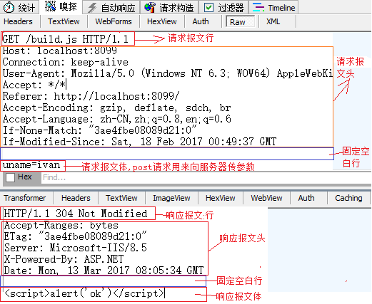
4.1 vue-resource
Vue与后台Api进行交互通常是利用vue-resource来实现的，本质上vue-resource是通过http来完成AJAX请求响应的
- vue-resource GitHub 地址：https://github.com/pagekit/vue-resource
vue-resource Http请求api参考（主要看这个）：https://github.com/pagekit/vue-resource/blob/master/docs/http.md
vue结合vue-resource写法步骤
1、通过 https://cdn.jsdelivr.net/vue.resource/1.2.1/vue-resource.min.js 下载到vue-resource文件
2、在html页面中通过script标签导入vue-resource.min.js 文件后，就会自动的在Vue对象实例上初始化 $http
3、使用
// 全局Vue对象写法
Vue.http.get('/someUrl', [options]).then(successCallback, errorCallback);
Vue.http.post('/someUrl', [body], [options]).then(successCallback, errorCallback);
// 在Vue对象中的写法
this.$http.get('/someUrl', [options]).then(successCallback, errorCallback);
this.$http.post('/someUrl', [body], [options]).then(successCallback, errorCallback);
- vue-resource get请求
写法格式：
this.$http.get('请求的url', [可选参数对象，使用{}传参]).then(成功回调函数, 失败回调函数);
成功回调函数参数对象主要属性说明：
1、url ： 请求的原始url
2、body： 响应报文体中的数据（我们通常用这个属性获取服务器返回的数据）
3、其他属性请看文档
举例：
this.$http.get('http://vuecms.ittun.com/api/getlunbo?id=1').then(function(res){console.log(res.body)}, function(err){//err是异常数据});
- vue-resource post请求
写法格式：
this.$http.post('请求的url',[可选参数请求报文体对象body,使用{}传参], [可选参数对象，使用{}传参]).then(成功回调函数, 失败回调函数);
成功回调函数参数对象主要属性说明：
1、url ： 请求的原始url
2、body： 响应报文体中的数据（我们通常用这个属性获取服务器返回的数据）
3、其他属性请看文档
注意点：
$http.post()方法中的第二个参数固定写成：{emulateJSON:true},否则可能造成服务器无法接收到请求报文体中的参数值
举例：
this.$http.post('http://vuecms.ittun.com/api/adddata?id=1' //请求的url
,{content:'hello'} //请求报文体中传入的参数对象，多个使用逗号分隔
,{emulateJSON:true} //固定写法，保证服务器可以获取到请求报文体参数值
).then(function(res){console.log(res.body)}, function(err){//err是异常数据});
- vue-resource jsonp请求
jsonp请求主要用来解决ajax跨域请求问题，使用jsonp实现跨域首先要保证服务器api支持jsonp请求的格式
写法格式：
this.$http.jsonp('请求的url', [可选参数对象，使用{}传参]).then(成功回调函数, 失败回调函数);
成功回调函数参数对象主要属性说明：
1、url ： 请求的原始url
2、body： 响应报文体中的数据（我们通常用这个属性获取服务器返回的数据）
3、其他属性请看文档
举例：
this.$http.jsonp('http://vuecms.ittun.com/api/getlunbo?id=1').then(function(res){console.log(res.body)}, function(err){//err是异常数据});
4.2 利用vue-resource完成品牌管理案例的AJAX版本
5 Vue的生命周期方法

Vue第三天
今日内容介绍
- Vue1.0过渡动画的实现
- Vue2.0过渡动画的实现
- 组件定义和注册的各种写法
- 组件的动态切换
- 组件的传值
##今日内容学习目标
- 知道vue动画效果的三个css的作用
- 记住vue1.0和2.0利用css的三个类来控制过渡动画的写法
- 记住vue1.0和2.0中利用animate.css来控制过渡动画写法
- 记住vue1.0和2.0中过渡动画的钩子函数使用
- 知道组件的定义和注册写法 Vue.component()
- 知道利用components实现子组件的定义
- 知道利用props实现父组件传值给子组件的写法
- 知道利用component 控制组件的切换
- 知道利用$emit和v-on来实现子组件传值给父组件
- 知道v-el与v-ref的区别和使用
详细内容
1.0 Vue过渡动画
通过 Vue.js 的过渡系统，可以在元素从 DOM 中插入或移除时自动应用过渡效果。Vue.js 会在适当的时机为你触发 CSS 过渡或动画
常用场景有：
1、条件渲染 （使用 v-if）
2、条件展示 （使用 v-show）
3、动态组件
1.0.1 transition的作用
1、在Vue1.0版本中为了应用过渡效果，需要在实现过渡动画的元素上使用 transition 特性，示例：
<div v-if="show" transition="my-transition"></div> ,my-transition 可以有程序员自定义名称
2、 在Vue2.0版本中改变成了由 transition特性的写法变成了 <transition></transition>的写法
<transition name="fade">
<p v-if="show">hello</p>
</transition>
***transition通常与下面指令结合在一起使用：
- v-if
- v-show
1.0.2 Vue中过渡动画的几种常用写法
利用css控制过渡动画
Vue1.0写法
Vue2.0写法

利用animate.css控制过渡动画
Vue1.0写法
Vue2.0写法

利用钩子函数控制过渡动画
- Vue1.0 过渡动画API文档：http://v1-cn.vuejs.org/guide/transitions.html
- Vue2.0 过渡动画API文档：http://cn.vuejs.org/v2/guide/transitions.html
Vue1.0钩子函数
1、过渡动画进入 beforeEnter:function(el){} 过渡动画进入之前，一般在这个方法中定义目标元素的初始位置 enter:function(el,done){} 过渡动画进入中，在这个方法中定义目标元素的结束位置 afterEnter:function(el){} 过渡动画结束后，通常在这个方法里面重置初始值 enterCancelled:function(el){} 取消过渡动画时被调用 2、过渡动画离开 beforeLeave:function(el){} 动画离开之前触发 leave:function(el){} 过渡动画进入中触发 afterLeave:function(el){} 过渡动画离开结束后 leaveCancelled:function(el){} 取消过渡动画时被调用3、使用示例： Vue2.0钩子函数
1、过渡动画进入
before-enter 过渡动画进入之前，一般在这个方法中定义目标元素的初始位置
enter 过渡动画进入中，在这个方法中定义目标元素的结束位置
after-enter 过渡动画结束后，通常在这个方法里面重置初始值
enter-cancelled 取消过渡动画时被调用
2、过渡动画离开
before-leave 动画离开之前触发
leave 过渡动画进入中触发
after-leave 过渡动画离开结束后
leave-cancelled 取消过渡动画时被调用
3、使用示例： 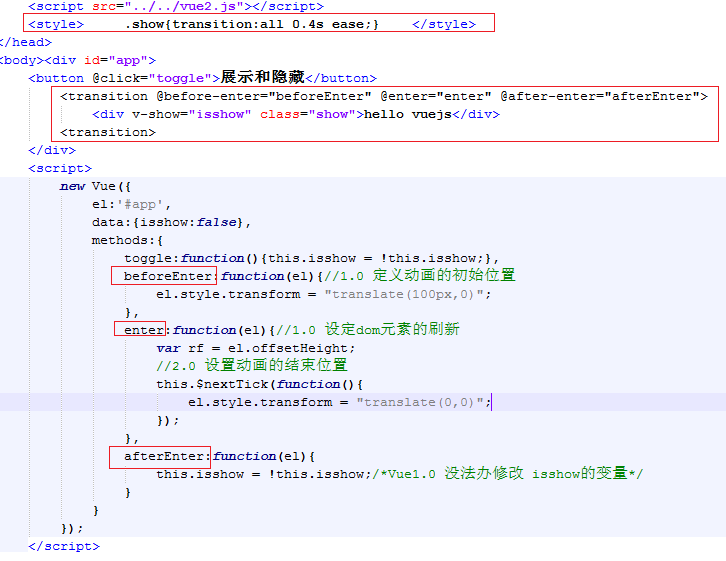
2.0 Vue组件
组件（Component）是 Vue.js 最强大的功能之一。组件可以扩展 HTML 元素，封装可重用的代码
2.0.1 组件的定义和注册
写法1：使用Vue.extend方法定义组件，使用 Vue.component方法注册组件

写法2:使用 Vue.component方法定义注册组件一步到位
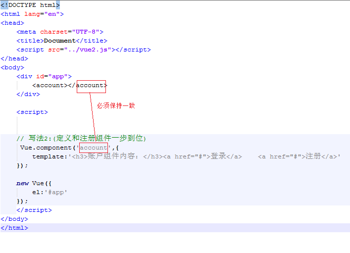
写法3：将组件内容定义到template模板中

写法4：将组件内容定义到类型为 x-template的script模板中

2.0.2 组件中实现指令以及事件绑定

2.0.3 组件中注册子组件
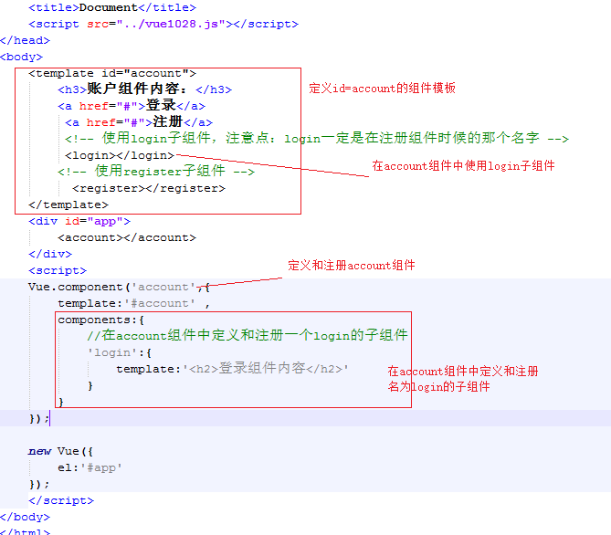
2.0.4 组件中利用component中的is来实现组件切换

2.0.5 实现父组件传值给子组件

2.0.6 实现子组件传值给父组件

2.0.7 通过v-el获取到dom对象

2.0.8 通过v-ref获取到整个组件的对象
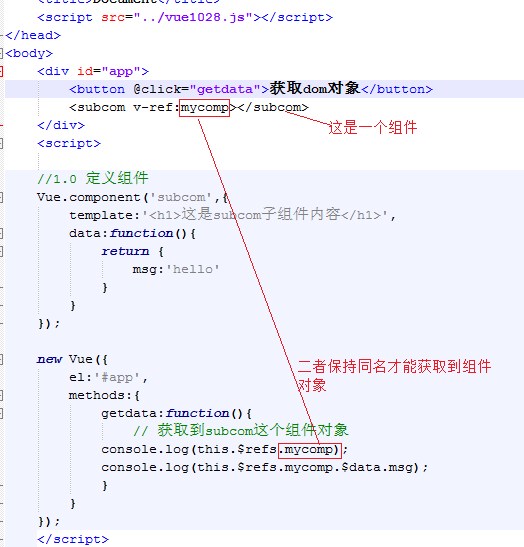
Vue第三天
今日内容介绍
- 路由服务vue-router在Vue1.0的写法
- 路由服务vue-router在Vue2.0的写法
- watch和计算属性的学习
- 总结这几天学习中知识点在Vue1.0与2.0的区别
- WebPack学习以及相关-loader的使用
##今日内容学习目标
- 记住vue-router的Vue1.0和2.0版本的基本写法
- 知道使用vue-router实现url传入参数，用$route.params接收参数
- 知道嵌套路由的使用，vue1.0用subRoutes 2.0使用 children
- 记住$watch和计算属性computed的使用
- 记住webpack打包css，less,sass的相关-loader包
- 记住webpack es6转es5的写法和注意点
- 记住webpack完成 url()导入资源文件的打包
详细内容
1.0 路由vue-router
在一个系统中会由很多页面组成，在Vue开发中这些页面通常使用的是Vue中的组件来实现的，那么当在一个页面要跳转到另外一个页面的时候
是通过改变url路径来实现的，那么这个时候Vue需要知道当前url对应的是哪个组件页面，这个控制着就是vue-router
接下来，学习vue-router的相关写法,
注意的是：vue-router 在vue2.0版本中做了很大的改动，所以要注意Vue的版本来选择预期对应的vue-router版本
1.0.1 vue-router资源和介绍
- 配合Vue1.0使用的版本的帮助文档地址：https://github.com/vuejs/vue-router/tree/1.0/docs/zh-cn
- 配合Vue1.0使用的vue-router下载地址：https://cdnjs.cloudflare.com/ajax/libs/vue-router/0.7.10/vue-router.min.js
- 配合Vue2.0使用的版本的帮助文档地址：http://router.vuejs.org/zh-cn/installation.html
- 配合Vue2.0使用的vue-router下载地址：https://unpkg.com/vue-router/dist/vue-router.js
1.0.2 vue-router在 vue1.0中的使用
- 1、请下载匹配Vue1.0版本的vue-router文件
- 2、vue-router使用示例代码
1.0.3 vue-router在 vue2.0中的使用
- 1、请下载匹配Vue2.0版本的vue-router文件
- 2、vue-router使用示例代码

1.0.4 vue1.0的路由参数定义实现url的传值
- 1、请下载匹配Vue1.0版本的vue-router文件
- 2、vue-router路由参数示例代码
1.0.5 vue2.0的路由参数定义实现url的传值
- 1、请下载匹配Vue2.0版本的vue-router文件
- 2、vue-router路由参数示例代码

1.0.6 vue1中嵌套路由的写法
- 1、请下载匹配Vue1.0版本的vue-router文件
- 2、vue-router嵌套路由示例代码
1.0.7 vue1中嵌套路由的写法
- 1、请下载匹配Vue2.0版本的vue-router文件
- 2、vue-router嵌套路由示例代码 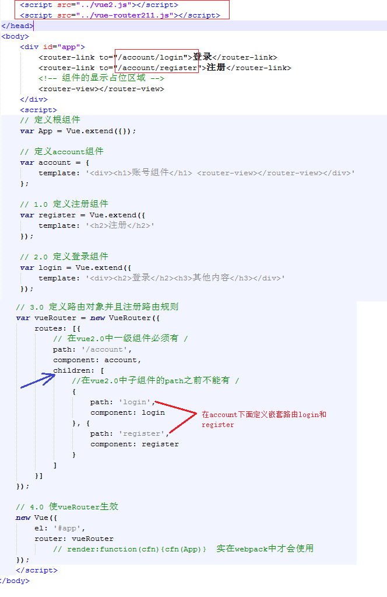
2.0 watch与计算属性computed
watch与computed均可以监控程序员想要监控的对象，当这些对象发生了改变以后，可以触发回调函数做一些逻辑处理
2.0.1 watch用法举例
监听data中定义的属性

监听路由对象$route
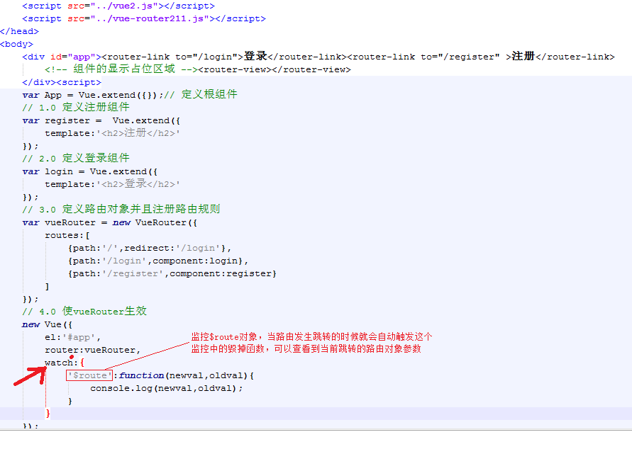
2.0.2 computed用法举例
监听data中定义的属性
3.0 Vue1.0与Vue2.0区别总结
总结前3天中学习知识点中Vue1.0和2.0的区别
总结如下
4.0 webpack
4.0.1 webpack介绍
- webpack是一个资源的打包工具，分为1.0和2.0版本，可以将 .js, .css , image等静态资源当做一个模块来进行打包，那么每一种模块都是有一个对应的 loader来实现
- webpack 1.0版本官网：https://webpack.github.io/docs/usage.html
- webpack 2.0版本官网：https://webpack.js.org/
- 在这个项目中使用webpack 1.14.0
- node环境的安装
webpack是基于nodejs运行的，所以在安装webpack之前必须先安装nodejs环境,安装步骤如下
1、去 https://nodejs.org/en/ 中下载当前操作系统匹配的版本,windows下软件名称通常叫做 node.exe
2、双击node.exe一路安装好，由于node.exe已经包含了npm工具，所以npm也能正常使用了
3、由于直接使用npm install 安装第三方包是去国外网站上下载，有可能会被墙而安装失败，所以我们要将下载源切换到国内淘宝上因此需要利用 npm install nrm -g安装一个全局的nrm
4、安装好nrm以后，在cmd命令面板中输入： nrm use taobao 将下载源切换到淘宝，可以使用 nrm ls 查看当前使用的下载源
5、也可安装淘宝提供的类似于npm的工具 cnpm来替代npm安装node包,安装包命令和npm一样，安装cnpm命令： npm install cnpm -g
- webpack的安装
安装webpack步骤：
第一种安装方式：
在cmd命令行面板中 执行： npm install webpack@1.14.0 -g 将webpack1.14.0版本安装为全局就能够在cmd命令行面板中使用webpack指令了
第二种安装方式：
在cmd命令行面板中 执行： cnpm install webpack@1.14.0 -g 将webpack1.14.0版本安装为全局就能够在cmd命令行面板中使用webpack指令了
4.0.1 webpack常用指令和webpack.config.js配置文件
- webpack常用指令
webpack 入口文件.js 输出文件.js
webpack // 最基本的启动webpack的方法，默认查找名称为 webpack.config.js文件
webpack --config webpack.config.js // 指定配置文件
webpack -p // 对打包后的文件进行压缩
webpack -d // 提供source map，方便调式代码
- webpack.config.js配置文件的作用
如果只在cmd命令面板中输入 webpack指令，后面不跟任何参数的话，则默认查找的是 webpack.config.js文件，在这个文件中可以配置入口文件，输出文件以及相关loader和插件等,以增强webpack的功能
- 一个常用webpack1.0版本的webpack.config.js文件结构：
// 导入html-webpack-plugin 包，用来根据模板自动生成index.html
var htmlwp = require('html-webpack-plugin');
module.exports={
entry:'./src/main.js', // 1.0 定义打包的入口文件路径
output:{
path:'./dist', //打包以后的文件存放目录
filename:'build.js' // 打包以后生成的文件名称
},
module:{
loaders:[
{
// 将当前项目中所有的.js文件都要进行es6转es5操作，node_moudels除外
test:/\.js$/, //表示当前要打包的文件的后缀正则表达式
// loader:'babel-loader?presets[]=es2015', //如果写到这里，将来在打包.vue文件的时候会报错，表示先利用css-loader解析.css文件，再调用style-loader打包
loader:'babel-loader',
exclude:/node_modules/ //node_modules中的所有.js文件不去转换，提高打包性能
}
]
},
babel:{
presets: ['es2015'], //表示es6转es5
plugins: ['transform-runtime'] //这句代码就是为了解决打包.vue文件不报错
},
plugins:[
new htmlwp({
title: '首页', //生成的页面标题
filename: 'index.html', //webpack-dev-server在内存中生成的文件名称，自动将build注入到这个页面底部，才能实现自动刷新功能
template: 'index1.html' //根据index1.html这个模板来生成(这个文件请你自己生成)
})
]
}
4.0.2 webpack中loader介绍
- loader介绍
webpack本身不支持css,less,sass,js,image等相关资源的打包工作的，它仅仅提供了一个基础的框架，在这个框架上借助于相关的loader才可以实现css,less,sass,js,image等相关资源的打包工作
4.0.3 webpack相关配置
在使用loader之前需要在当前项目目录下打开cmd命令面板，输入: npm init 初始化一个 package.json文件来存放相关的 loader包
4.0.3.1 打包css资源演示
webpack中使用css-loader和style-loader这两个loader来处理css资源的打包工作，所以使用前必须在项目中先安装这两个包:
npm i css-loader style-loader --save-dev
- 在webpack.config.js中配置这两个loader
- 在项目中建立一个site.css文件，并且在main.js中导入
- 在cmd中执行webpack命令
4.0.3.2 打包sass资源演示
webpack中使用sass-loader，css-loader，style-loader来处理.scss文件的打包工作,而sass-loader需要依赖于node-sass所以使用前必须在项目中先安装这些包，
并且node-sass的某些文件下载是需要去google上的，为了防止被墙而导致安装失败，所以建议使用cnpm来安装：
cnpm install node-sass sass-loader css-loader style-loader --save-dev
- 在webpack.config.js中配置这两个loader
- 在项目中建立一个site1.scss文件，并且在main.js中导入
- 在cmd中执行webpack命令
在项目根目录下打开cmd命令面板，输入：webpack 回车即可打包完成
此时检查build.js文件的内容，sass语法是变成了css语法表示打包成功
4.0.3.3 打包less资源演示
需要安装的node包有：
css-loader： 编译css
style-loader：编译css
less-loader： 编译less
less: less-loader的依赖包
在项目根目录下打开cmd命令面板，输入：
npm install less less-loader style-loader css-loader --save-dev 回车即可完成安装
- 在webpack.config.js中配置这两个loader
- 在项目中建立一个site1.scss文件，并且在main.js中导入
- 在cmd中执行webpack命令
在项目根目录下打开cmd命令面板，输入：webpack 回车即可打包完成
此时检查build.js文件的内容，less语法是变成了css语法表示打包成功
4.0.3.4 打包url()请求的资源
需要安装的node包有：
url-loader：打包通过url()方式的请求资源
file-loader: url-loader的依赖loader
在项目根目录下打开cmd命令面板，输入：
npm install url-loader file-loader --save-dev 回车即可完成安装
- 在webpack.config.js中配置这两个loader
- 在site.css文件导入一个图片
- 在cmd中执行webpack命令
在项目根目录下打开cmd命令面板，输入：webpack 回车即可打包完成
检查是否成功分两种情况：
1、如果打包的图片大小大于配置文件中 url-loader?limit= 中的limit值的话，则会在目录下看到一张单独的一个图片
2、如果打包的图片大小小于等于配置文件中 url-loader?limit= 中的limit值的话，则会将图片以base64格式存储在build.js中
请按照上述两种情况去验证是否打包成功
4.0.3.5 ECMAScript6语法转ECMAScript5语法
需要安装的node包有：
babel-core
babel-loader
babel-preset-es2015
babel-plugin-transform-runtime：这个包主要是在打包.vue组件页面中的es6语法需要
在项目根目录下打开cmd命令面板，输入：
npm install babel-core babel-loader babel-preset-es2015 babel-plugin-transform-runtime --save-dev 回车即可完成安装
- 在webpack.config.js中配置这两个loader
- 在main.js中使用es6语法导入site.css
import '../statics/css/site.css'
- 在cmd中执行webpack命令
在项目根目录下打开cmd命令面板，输入：webpack 回车即可打包完成
检查build.js文件中，如果出现了类似于 require('../statics/css/site.css'); 但是看不到import '../statics/css/site.css' 表示转换成功